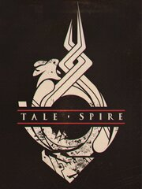

TaleSpire
TaleSpire
Detalles
|  | |
| Tiempo de juego | 9m 0s |
| Última actividad | 11/10/2023 18:33:26 |
| Añadido | 16/10/2023 11:22:00 |
| Modificado | 16/10/2023 11:22:25 |
| Estado de finalización | Jugado |
| Librería | Steam |
| Fuente | Steam |
| Plataforma | PC (Windows) |
| Fecha de lanzamiento | 14/04/2021 |
| Puntuación de la Comunidad | 90 |
| Puntuación de la Crítica | |
| Puntuación de usuario | |
| Género | Early Access Indie RPG Simulation |
| Desarrollador | Bouncyrock Entertainment |
| Editor | Bouncyrock Entertainment |
| Característica | Co-Op Includes Level Editor Multi-Player Online Co-Op |
| Enlaces | Punto de encuentro Discusiones Guías Noticias Página de la tienda PCGamingWiki |
| Tag | 3D Atmospheric Board Game building CRPG Dark Fantasy Dungeons & Dragons early-access Exploration Fantasy indie Level Editor Multiplayer Online Co-Op Party-Based RPG RPG Sandbox Simulation tabletop Third Person |
Descripción

Overview / What Is TaleSpire?
TaleSpire is a beautiful way to play pen and paper RPGs online. Bring your stories to life and embark upon campaigns together with your friends, regardless of where you are in the world.
With Talespire, the beauty and physicality of tabletop gaming meet the endless possibilities of a digital world. Here you can collaboratively build your worlds without compromising the handcrafted aesthetic of using traditional miniatures.
As a player, you can take on the mantle of multiple heroes and creatures, manage your stats, and express yourself using the growing emote system. Perform dice rolls directly on the board and interact with your environment — at least, as far as your GM will let you!
As a GM, you can dazzle and thrill your friends by building expansive maps, setting up shots, and controlling immersive soundscapes to bring all your delightful and devious designs to life.
TaleSpire is not tied to a specific game or ruleset. Whether you’re running a one-shot or a sprawling campaign, if it's on a square grid then we have your back. We are now in Early Access, so now is your chance to raise up your sword, rally your friends, and take your next adventure online with us.

Building and play are one
Setting the stage for your story takes no time at all with Talespire, but even if you forget to prep, it can all be added in while you play. Want to destroy a wall to reveal a secret passage? Do it! Want to rain down piles of gold from the heavens? You have the power. At any moment during your adventure, you (or multiple GMs) can jump into building mode and change the world without interrupting anything else. Our persistent online boards can be created at a moment’s notice, and everything is synchronized in real-time as you dice-roll your way to glory.

A slew of tools to help you on your adventures
It’s dangerous to go alone, but luckily we have a bunch of tools that can help, and all are as pleasing as they are useful. Beautiful dice, rulers and area markers, a range of emotes, and special modes for turn-based combat and cinematic sequences are at your disposal.A growing library of assets
Pick from a plethora of pieces to create your scenes! The current roster stands at 280 miniatures, 2100 tiles and props, and 60 unique audio tracks. Our library is ever-expanding; we produce fresh asset packs every month.Share your creations
TaleSpire boards are designed to be easily shared, whether with friends or with the wider community on sites like TalesBazaar or TalesTavern. You can copy sections of your boards (slabs) and paste them as text outside of TaleSpire. Simply paste the text back into TaleSpire to summon the slab to your hand.This tale has only just begun
Being in Early Access we still have plenty of adventures ahead of us. We have an active Discord community, which you can find here (https://discord.gg/talespire), and alongside your feedback we’re looking forward to developing the game’s features. So come, journey with us a while.